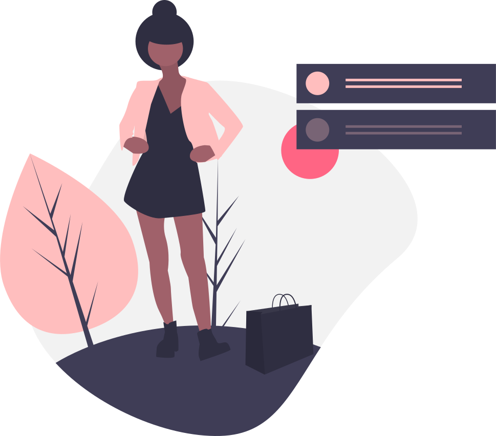

<!--
  Generated template for the ChatroomPage page.

  See http://ionicframework.com/docs/components/#navigation for more info on
  Ionic pages and navigation.
-->
<ion-header>
  <ion-navbar>
    <ion-title>Chats</ion-title>
  </ion-navbar>
</ion-header>

<ion-content>
  <!-- <ion-row>
    <h2 class="heading-center" *ngIf="total_chat_friends_data_list.length == 0">No Chat available</h2>
  </ion-row>
  <ion-row *ngFor="let data of total_chat_friends_data_list" (click)="goTo(data.user_id,data?.profile.name,data.profile.profile_image)">
    <ion-col siz="3" style="    display: flex;
    justify-content: center;
    margin-top: 4%;">
      <ion-avatar>
        
        

      </ion-avatar>
    </ion-col>
    <ion-col size="9" style="border-bottom: 1px solid #ccc;">
      <div class="first">
        <h4 style="font-size: 16px;">{{data.profile.name}}</h4>
        <span slot="end" style=" margin-top: 8%;
  font-size: 11px;
  margin-right: 7%;">{{convertTime(data.time_stamp)}}</span>
      </div>
      <p style="font-size: 11px;
margin: 0px;">{{data.last_message}}</p>

    </ion-col>
  </ion-row> -->
 <div class="msg-list"  *ngFor="let data of total_chat_friends_data_list">
   <ion-row  (click)="goTo(data.user_id,data?.profile.name,data.profile.profile_image)">
 <ion-col col-4 class="profile_pic">
   <ion-thumbnail>
     
     
   </ion-thumbnail>
 </ion-col>
 <ion-col col-8>
   <small> {{convertTime(data.time_stamp)}}</small>
   <h2>{{data.profile.name}}</h2>
   <p class="message-chatroom">{{data.last_message}}</p>
 </ion-col>
   </ion-row>
 </div>
  <div class="no-data" *ngIf="total_chat_friends_data_list.length==0 && noData">
    <div style="    text-align: center; width: 100%;"> </div>
    <p> No Chat Found.</p>
    <!-- <p>To chat, please select any user from box details</p> -->
  </div>
</ion-content>